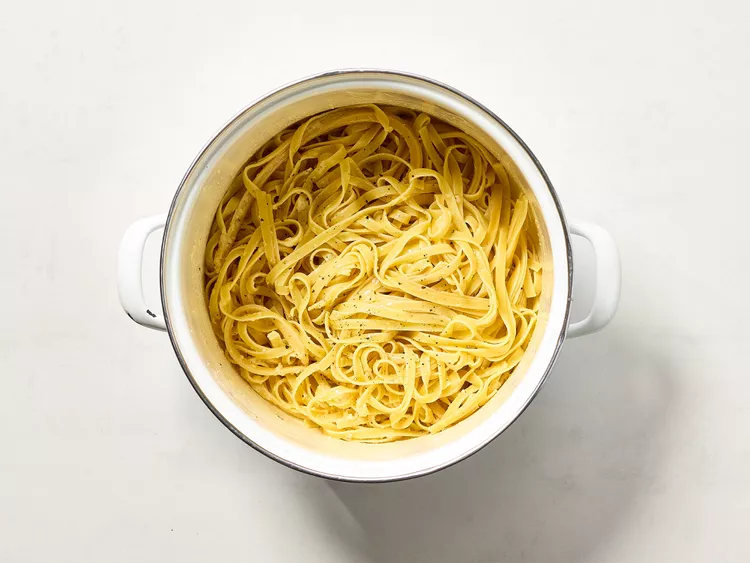

Back
Noodles

Description
Buttered noodles are simple to make with your favorite pasta, butter, Parmesan cheese, salt, and pepper for a quick and easy, kid-friendly dish. Fresh herbs and a little lemon juice could be added to amp up the flavor. Perfect to serve either as-is or alongside steak, chicken, or meatballs. It's such a delicious recipe, yet I get many questions on how to make it.
Ingredients
- 1 pound pasta
- 2 tablespoons butter
- 1/2 cup grated Parmesan cheese
- 1/2 teaspoon salt
- 1/2 teaspoon black pepper
Steps
- Boil pasta in salted water.
- Drain pasta and return to pot.
- Add butter and Parmesan cheese.
- Stir until melted and cheese is melted.
- Add salt and pepper to taste.
- Stir until melted and cheese is melted.
- Stir until melted and cheese is melted.